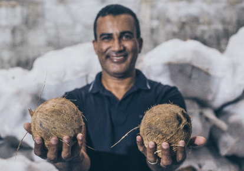

Ipsum Transforma: projetos que fazem bem, bem mais feliz.

Matéria-prima direto do pequeno produtor com todo o carinho que você merece.


Reciclar as embalagens Logo Ipsum é um dos ingredientes da nossa receita de sucesso.